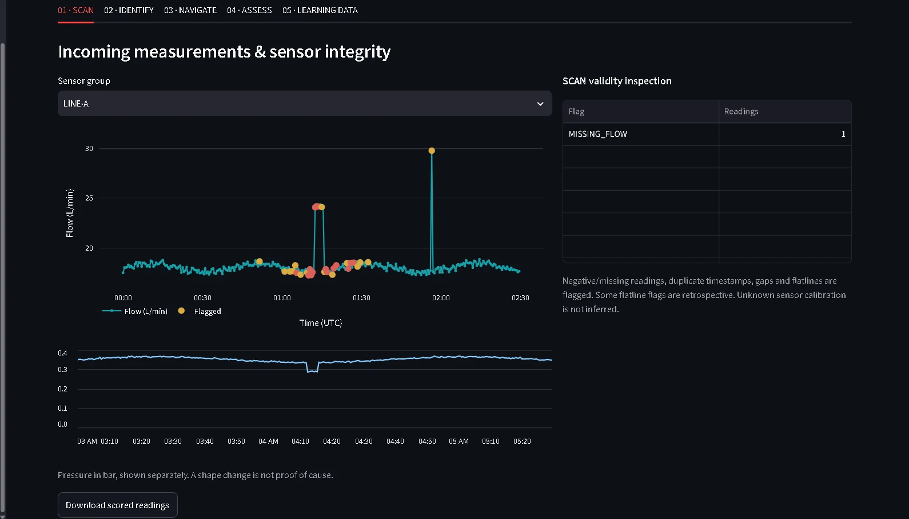
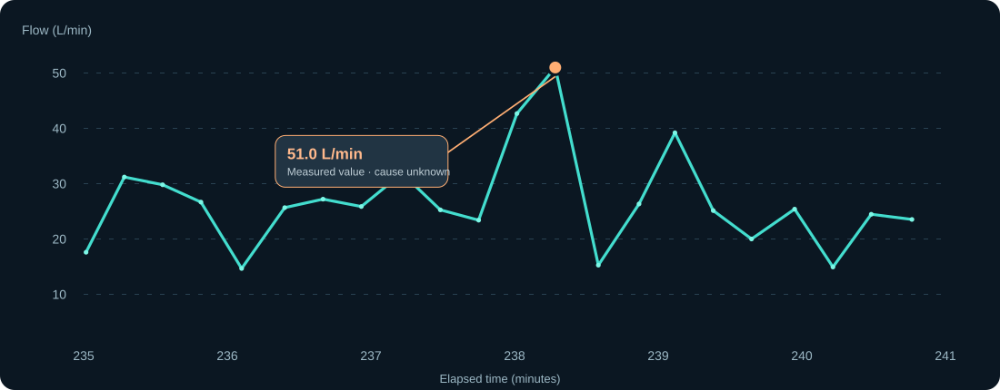

01 / SCAN↗
SCAN
Collect flow and pressure readings. Flag missing values, data gaps, and sensor integrity issues.
SINA is an AI-assisted hydraulic monitoring and decision-support prototype designed to help small farms investigate unusual irrigation behavior.
From sensor integrity to anomaly evidence, incident prioritization, and human review — one connected workflow, with clear scientific limits.
SINA does more than report an unusual number. Its workflow helps operators understand the signal, assess its urgency, and document what they discover.
Collect flow and pressure readings. Flag missing values, data gaps, and sensor integrity issues.
Compare readings with an assumed normal baseline using an unsupervised anomaly model.
Organize hydraulic and data-quality events into a prioritized inspection queue — not exact leak localization.
Examine flagged events, review measurement context, and document operator findings and evidence.
Reviewed, evidence-linked, non-demo cases can become candidates for future research. No automatic retraining or independently certified ground truth is implied.
Explore real screenshots from SINA Fresh 0.2.1. The displayed dashboard measurements are a synthetic offline demonstration, not a deployed farm experiment.

We distinguish real but unlabeled sensor data, earlier exploratory controlled-leak analysis, and software tests. These support different kinds of claims.

Across the 911 measurements, one reading reached 51.00 L/min at minute 238.28, followed by approximately 15.27 L/min in the next recorded sample. The cause is unknown; this is not proof of a leak or a validated detection by Fresh 0.2.1.
Original measured-data source ↗A separate historical evaluation used 126 measurements from 7 short controlled leak events in a water-transmission test dataset. The conservative historical alarm rule detected 0 of 7 event onsets in that comparison.
Those results do not validate Fresh 0.2.1. They show why physical sensitivity, false alarms, and deployment limits still require rigorous evaluation.
Automated checks covered gateway input, time alignment, incident records, SQLite persistence, source separation, and safeguards against synthetic data entering training-candidate exports.
They did not include real Arduino field operation, a browser-based end-to-end validation, or real-world leak-detection accuracy tests.
SINA is a functioning local prototype — not yet a certified leak detector or an internet-scale platform. Its next milestone is independent, measured field validation.
Five modules, local records, and an investigation trail.
Input validation, event evidence, and test coverage.
Evaluate on real devices and monitored irrigation lines.
Measure detection delays and false alerts on separate physical campaigns.
A research-stage platform for investigating unusual irrigation behavior — built to be tested, challenged, and improved.